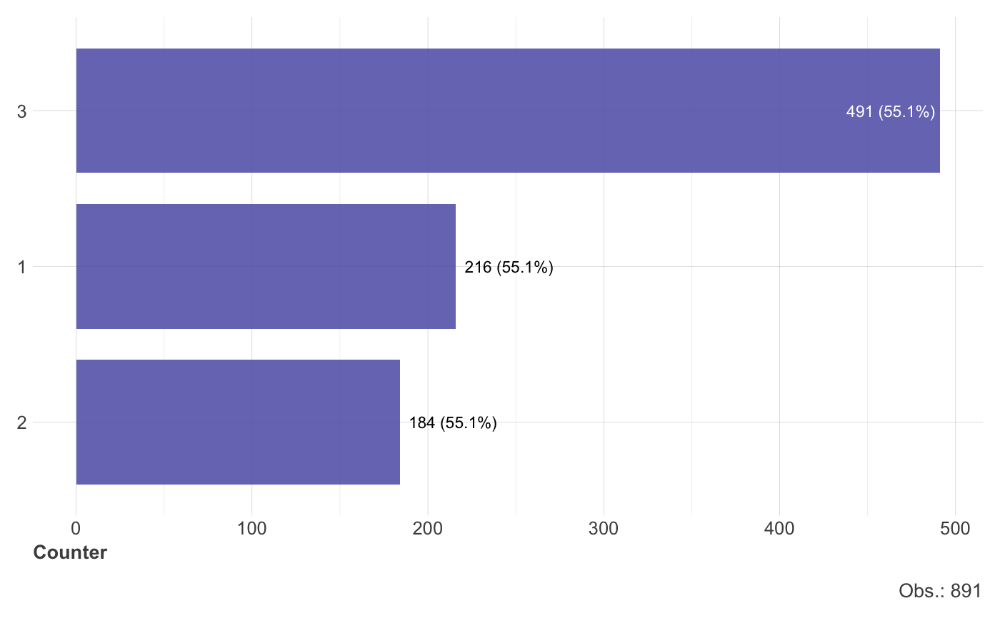
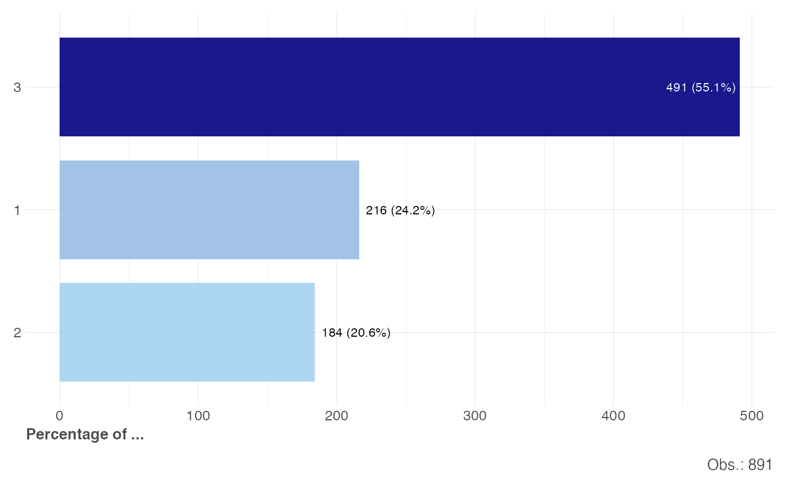

This function uses a nice template for barplots.
gg_bars( names, n, p = NA, title = NA, subtitle = NA, axis = "Counter", obs = TRUE, limit = 15, na.rm = FALSE )
| names | Character Vector. Bar names |
|---|---|
| n, p | Numeric Vectors. n for counter, p to force percentage. |
| title, subtitle, axis | Character. Texts for plot |
| obs | Boolean. Show observations counter? |
| limit | Integer. Limit n most frequent values only |
| na.rm | Boolean. Remove empty and NAs? |
Other Visualization:
distr(),
freqs_df(),
freqs_list(),
freqs_plot(),
freqs(),
gg_pie(),
noPlot(),
plot_chord(),
plot_survey(),
plot_timeline(),
summer(),
theme_lares(),
tree_var()
options("lares.font" = NA) # Temporal data(dft) # Titanic dataset df <- freqs(dft, Pclass) gg_bars(df$Pclass, n = df$n)gg_bars(df$Pclass, n = df$n, p = df$p, axis = "Percentage of ...")